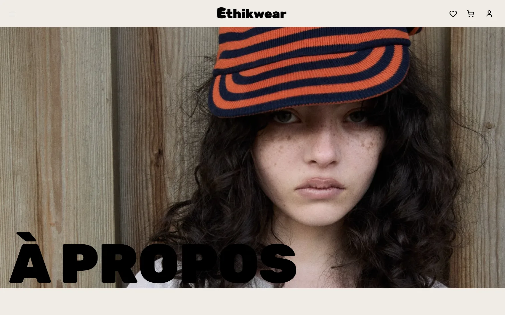
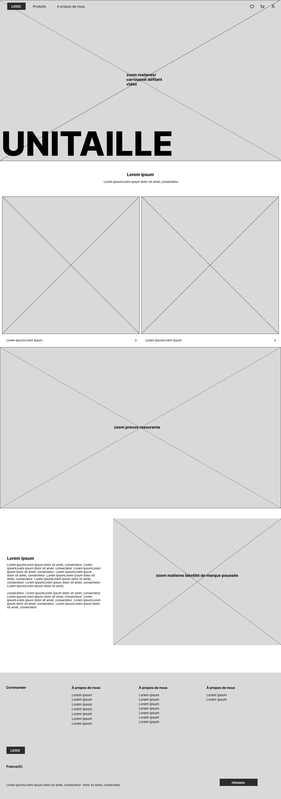
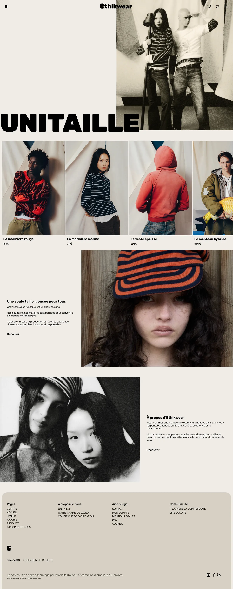
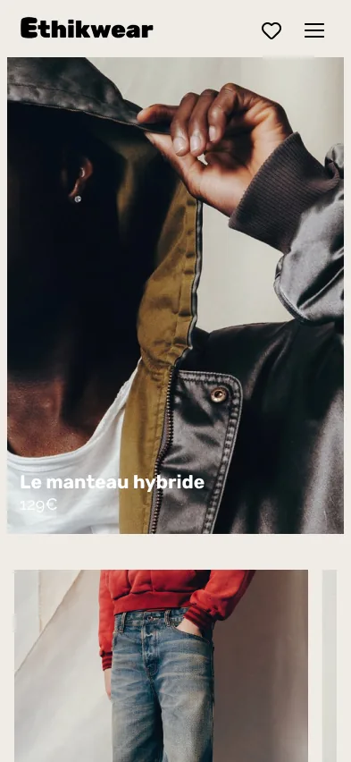
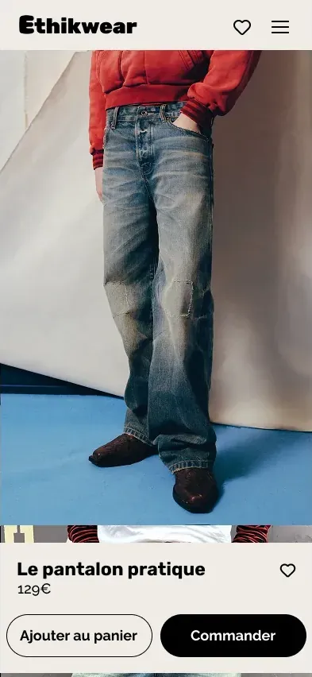

Ethikwear
Site e-commerce fictif de vêtements éco-responsables. Projet fil rouge d'Ynov Bordeaux, groupe de 4, premier semestre 2025-2026, environ six mois. Mon rôle : wireframes, maquette et prototype. Figma.
Voir le prototypeUne marque unitaille, inventée à quatre.
Le projet fil rouge d'Ynov, au premier semestre 2025-2026, demandait un site complet. Nous étions quatre, pour environ six mois. Notre sujet : Ethikwear, un e-commerce fictif de vêtements éco-responsables, avec un parti pris, l'unitaille, une seule taille pensée pour toutes les morphologies. Avant d'ouvrir Figma, nous avons mené la veille du marché, construit les personas et l'arborescence. Ensuite, je me suis occupé des wireframes, de la maquette et du prototype. C'est ce travail que je montre ici.

L'accueil, bloc pour bloc.
J'ai posé les wireframes de toutes les pages : accueil, liste des produits, fiche produit, panier, À propos, chacune en desktop et en mobile. L'image montre la page d'accueil en entier, de l'en-tête au pied de page, en wireframe à gauche et en maquette à droite. La maquette reprend la structure bloc pour bloc : le grand visuel « UNITAILLE » prend la place du bloc gris barré d'une croix, et la rangée de quatre vêtements avec leur prix remplace deux blocs.


Jusqu'au dernier bouton.
Le prototype existe en mobile et en desktop, et chaque bouton y est relié. La vidéo du haut part de l'accueil, passe par la liste des produits et arrive à la fiche produit. Sur la fiche, on peut ajouter au panier, aller jusqu'à commander, et ouvrir les rubriques Description, Matières et entretien, Livraison. Les deux écrans ci-contre sont ceux du mobile : la liste des produits, puis la fiche du pantalon pratique. Tout se parcourt depuis le lien « Voir le prototype ».


Ce que j'en retiens.
Un prototype complet se teste comme un vrai site, bien avant d'écrire une ligne de code.